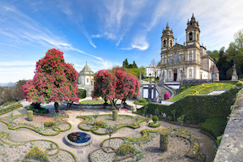
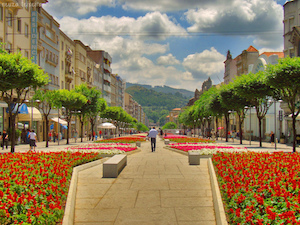
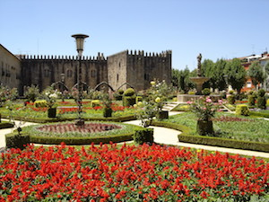

Visitar o Santuário do Bom Jesus do Monte

Situado no íngreme monte do Espinho, freguesia de Tenões, concelho e distrito de Braga, está o Santuário do Bom Jesus do
Monte, mais conhecido como Santuário do Bom Jesus de Braga.
O Santuário é composto por um escadório, que representa a Via Sacra do Bom Jesus e que sobe até à igreja. O conjunto arquitetónico
integra ainda o Parque do Bom Jesus (uma área de mata), Elevador do Bom Jesus (um funicular) e alguns hotéis.
O Santuário é um dos pontos mais falados da cidade. Veja a opinião dos visitantes no
TripAdvisor.
Passear pela Avenida da Liberdade

É o verdadeiro centro de Braga. no local do cruzamento de uma série de eixos fundamentrais: a Rua do Souto que se prolonga
até à Arcada, a Avenida da Liberdade e a Avenida Central. A partir daqui se desenvolve um extenso e colorido Jardim
com com magníficos canteiros floridos e uma fonte moderna. Não faltam esplanadas e locais para estar, com destaque
para os tradicionais cafés da Arcada.
Veja mais em
Lifecooler.
Visitar o Jardim de Santa Bárbara

O jardim é um dos lugares que mais me encanta na cidade. O Paço Episcopal Bracarense ao fundo parece um castelo medieval
e as flores nos dias de sol deixam tudo mais bonito e encantador. Em frente ao Jardim há uma hamburgueria artesanal
deliciosa: DeGema, vale a pena a visita!
Conheça mais sobre o jardim
aqui.